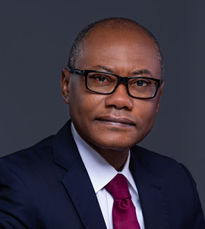

Home
About
Contact
Gallery
Partner
Projects
Home
About
Contact
Gallery
Partner
Projects

Aliko Dangote is the founder and president/chief executive of the Dangote Group, the largest conglomerate in West Africa. The Group currently has a presence in 17 African countries and is a market leader in cement on the continent. One of the Group's subsidiaries, Dangote Cement Plc, is the largest listed company in West Africa and the first Nigerian company to join the Forbes Global 2000 Companies list.
The Group has diversified into other sectors of the Nigerian economy including agriculture and is currently constructing the largest petroleum refinery, petrochemical plant and fertilizer complex in Africa.

Fatima Aliko Dangote is Group Executive Director Commercial Operations at Dangote Industries Limited (DIL). In this role, she is responsible for driving commercial operations across the various Dangote Business units and oversees the development and delivery of the Holding Company’s commercial brand and communications, strategic procurement and general administration.

Alhaji Abdu Garba Dantata is the Group Executive Director in charge of Logistics and Distribution. He was the Executive Director, Sales & Marketing in the Dangote Group, a position he has held since the Group was established more than 20 years ago.Alhaji Dantata has responsibility for coordinating the sales and marketing of all products manufactured or imported by the Group.
Mr. Olakunle Alake is the Vice President, Dangote Industries Limited, a position which he assumed on March 1, 2024. Under this newly created executive position, he is responsible for all the businesses in DIL excluding the Oil & Gas business. He will also continue to be responsible for the Group Finance and audit functionsresponsible for the Group Finance and audit functions.
Mr. D.V.G Edwin is the Vice President, Dangote Industries Limited, a position which he assumed on March 1, 2024. Under this newly created executive position, he is responsible for the Oil & Gas business of the Group, including the Refinery, Fertiliser, Petrochemical and Upstream businesses. Prior to this new position, he was the Group Executive Director, Strategy, Portfolio Development and Capital Projects, Dangote Industries Limited.
Dr. Adenike, a renowned Risk Management & Insurance specialist has over 18 years of diverse experience in developing and implementing Risk Management strategies in Financial, Engineering, Manufacturing, and other industries. Starting out her career as UK, serving in top management roles such as UK Head Operational Risk and Director of the Management Group for leverage finance at the Corporate and Investment Bank.
Mrs. Halima Aliko Dangote is a Group Executive Director, Dangote Industries Limited. She also served as Executive Director of Dangote Flour Mills, where she led the successful turnaround and recent sale of the business. Prior to then, she served as Executive Director of NASCON and continues to serve as a Non-Executive Director of NASCON.
Mr. Ekpe joined the banking sector as Head of Strategy, International Merchant Bank (affiliate of First Chicago); then Operations Manager and subsequently General Manager of IMB Securities, the stockbroking and investment First City Monument Bank, 1986-1987, and then General Manager, Nigeria International Bank (Citibank Nigeria), 1987-1990.
Mr. Olakunle Alake is the Vice President, Dangote Industries Limited, a position which he assumed on March 1, 2024. Under this newly created executive position, he is responsible for all the businesses in DIL excluding the Oil & Gas business. He will also continue to be responsible for the Group Finance and audit functionsresponsible for the Group Finance and audit functions.